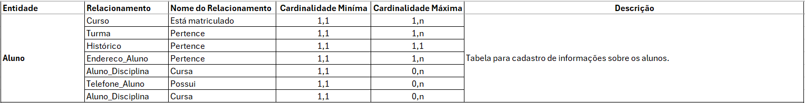
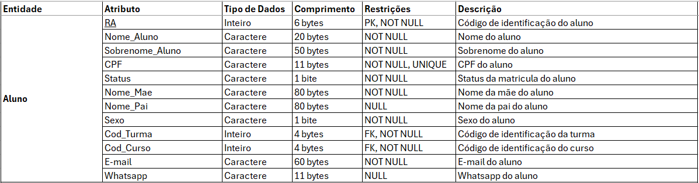
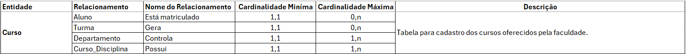
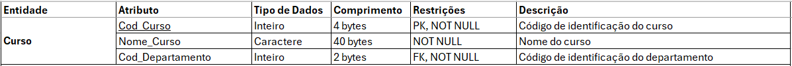
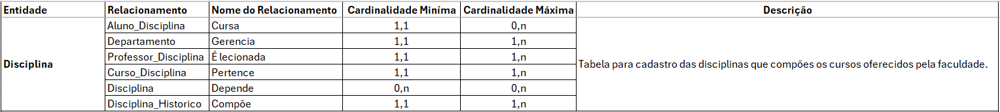
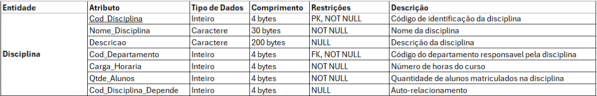

Objetivo do Banco de Dados
Este banco de dados foi desenvolvido durante o curso de SQL Server promovido pelo professor Fábio dos Reis da Bóson Treinamentos com o propósito de fornecer uma base estruturada para a realização de testes de inserção de dados.
Ele permite simular operações de inserção de registros em diferentes tabelas, possibilitando a validação de regras de integridade, desempenho de consultas e otimização de comandos SQL. Essa estrutura auxilia no aprimoramento e ajuste de procedimentos de manipulação de dados antes da aplicação em ambientes produtivos.
Fases do Projeto
Regras de Negócio
- Um aluno só pode estar matriculado em um curso por vez.
- Alunos possuem um código de identificação (RA).
- Cursos são compostos por disciplinas.
- Cada disciplina terá no máximo 30 alunos por turma.
- As disciplinas podem ser obrigatórias ou optativas.
- Cada disciplina possui um código de identificação.
- Em cada semestre, um aluno pode se matricular em até 9 disciplinas.
- Professores podem ser cadastrados mesmo sem lecionar disciplinas.
Detalhes do Desenvolvimento
Geração de Dados Fictícios para Testes
Para validar a estrutura e o funcionamento do banco de dados, utilizei dados fictícios cedidos durante o curso de SQL Server da Bóson Treinamentos e dados fictícios gerados através de IA generativa, onde os dados foram gerados utilizando ChatGPT para os nomes dos alunos, nomes dos professores, e-mail, cpf, nome da mãe, nome do pai, endereços, whatsapp, números de telefone etc.
O objetivo era simular um ambiente realista, garantindo que as tabelas e os relacionamentos fossem testados corretamente. Os dados passaram por verificações para evitar erros manter a integridade e coerência esperadas dentro do contexto acadêmico.
Confira um exemplo de insert a partir de dados gerados através de IA generativa e o resultado de uma consulta a esses dados:


Ferramentas e Tecnologias Utilizadas
- SQL Server: SGBD utilizado para criar e gerenciar o banco de dados, além de executar consultas SQL para manipulação e análise dos dados.
- SQL: Linguagem de consulta usada para gerenciar e manipular bancos de dados relacionais, ela é especializada na interação com o banco de dados.
- BRModelo: software utilizado para modelagem do banco de dados e criação de diagramas de entidade-relacionamento (ER).
- Excel: Utilização de planilhas para criação do dicionário de dados.
- Visual Studio Code: Utilizado para edição do arquivo Readme do projeto.
Modelagem
Nesta seção, temos a modelagem dos diagramas Entidade-Relacionamento (ER) do banco de dados, começando pelo modelo conceitual e avançando para o modelo lógico. O modelo conceitual foca na estrutura geral do banco, destacando entidades e seus relacionamentos, enquanto o modelo lógico detalha os atributos, chaves primárias e estrangeiras, refinando a modelagem para a implementação do banco de dados.
Diagramas Entidade Relacionamento (ER)
Modelo Conceitual
O diagrama conceitual representa uma visão de alto nível da estrutura do banco de dados, destacando as principais entidades e seus relacionamentos, sem detalhar atributos específicos. Este modelo serve para mapear os principais conceitos e suas conexões, facilitando o entendimento da estrutura do banco antes da implementação técnica.
O banco de dados foi modelado para armazenar e gerenciar informações acadêmicas de uma faculdade, abrangendo o cadastro de alunos, professores, cursos, disciplinas, turmas, departamentos e histórico escolar etc. Entre as principais entidades, destacam-se:
- Aluno: Representa os estudantes matriculados na instituição. Cada aluno pode estar vinculado a uma turma e a um curso.
- Curso: Contém os cursos oferecidos pela faculdade, sendo associados a um departamento específico.
- Professor: Representa os docentes da instituição, que pertencem a um departamento e lecionam disciplinas.
- Disciplina: Representa as matérias lecionadas nos cursos, podendo ter pré-requisitos e estar vinculadas a um departamento.
- Departamento: Administração acadêmica responsável pelos cursos e disciplinas.

Modelo Lógico
O diagrama lógico refina o modelo conceitual, detalhando a estrutura do banco de dados com a inclusão de atributos, chaves primárias, chaves estrangeiras e tabelas associativas para normalizar os relacionamentos.
A modelagem lógica seguiu as melhores práticas de banco de dados, garantindo:
- Aluno_Disciplina: Relaciona os alunos às disciplinas cursadas.
- Professor_Disciplina: Relaciona os professores às disciplinas que lecionam.
- Curso_Disciplina: Mapeia as disciplinas pertencentes a cada curso.
- Disciplina_Historico: Associa as disciplinas ao histórico dos alunos.

Para garantir a integridade referencial e eficiência da modelagem, o banco de dados foi projetado seguindo os princípios das 1ª, 2ª e 3ª formas normais:
- Primeira Forma Normal (1FN): Cada tabela contém apenas valores atômicos, sem grupos repetitivos ou colunas multivaloradas, garantindo que todos os atributos sejam indivisíveis.
- Segunda Forma Normal (2FN): Todas as tabelas atendem à 1FN e não possuem dependências parciais, ou seja, todos os atributos não-chave dependem totalmente da chave primária.
- Terceira Forma Normal (3FN): Além de atender à 2FN, eliminamos dependências transitivas, garantindo que os atributos não-chave dependam apenas da chave primária e não de outros atributos não-chave.
Essas normalizações contribuem para a eliminação de redundâncias e a melhoria do desempenho do banco, garantindo maior confiabilidade nos testes e inserções de dados. Dessa forma, este banco de dados será capaz de gerenciar informações acadêmicas de alunos, professores, cursos, disciplinas, departamentos históricos, turmas, endereços etc.
Dicionário de Dados
Aqui é podemos observar algumas imagens das tabelas descritas no dicionário de dados, clique no link abaixo para ter acesso ao dicionário de dados completo.
Download do Dicionário de Dados CompletoEntidades e Atributos
Entidade Aluno
Atributos Aluno
Entidade Curso
Atributos Curso
Entidade Disciplina
Atributos Disciplina
Scripts de Criação do Banco de Dados
Adicionei alguns scripts do processo de criação do Banco de Dados db_Faculdade.
Tenha acesso ao código completo no repositório do projeto.
--Tabela para cadastro das disciplinas cursadas na faculdade
CREATE TABLE Disciplina (
Cod_Disciplina INT PRIMARY KEY IDENTITY,
Nome_Disciplina VARCHAR(30) NOT NULL,
Descricao VARCHAR(200),
Qtde_Alunos INT NOT NULL,
Carga_Horaria INT NOT NULL,
Cod_Disciplina_Depende INT NULL,
Cod_Departamento INT NOT NULL,
CONSTRAINT fk_departamento_disciplina FOREIGN KEY (Cod_Departamento) REFERENCES Departamento (Cod_Departamento),
CONSTRAINT fk_disciplinadepende_disciplina FOREIGN KEY (Cod_Disciplina_Depende) REFERENCES Disciplina (Cod_Disciplina)
);